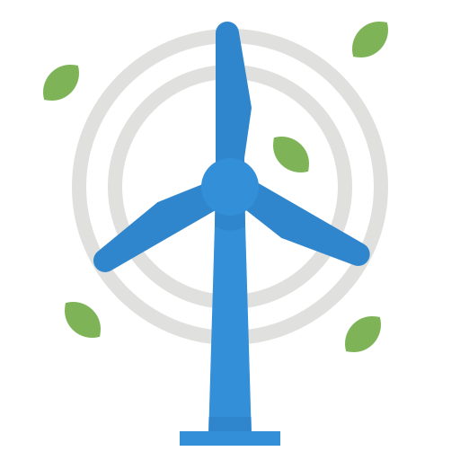
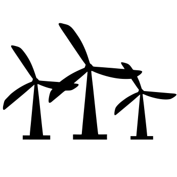
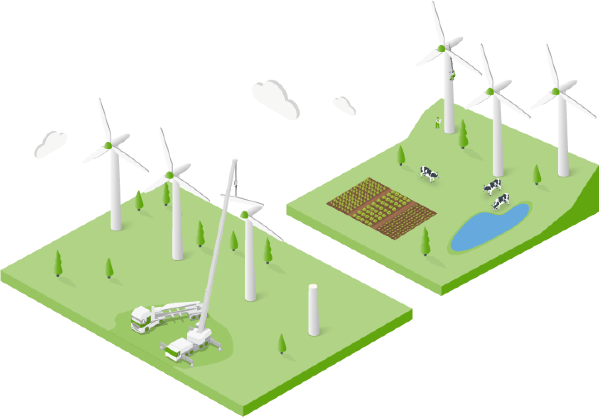

Energia eólica refere-se à energia obtida a partir do vento. É uma forma de energia renovável, pois é gerada pela força do vento, que é uma fonte natural e inesgotável. A energia eólica é captada por meio de aerogeradores, que são estruturas compostas por hélices ou pás que giram impulsionadas pelo vento. À medida que as pás giram, elas acionam um gerador que converte a energia cinética do vento em energia elétrica.

A energia eólica é considerada uma forma limpa de geração de eletricidade, pois não emite poluentes atmosféricos nem gases de efeito estufa durante a operação. Além disso, os parques eólicos ocupam menos espaço em comparação com outras fontes de energia, como usinas de energia solar ou térmica. No entanto, a disponibilidade de energia eólica depende da localização geográfica e das condições climáticas, sendo mais favorável em áreas com ventos constantes e fortes.
A energia eólica tem sido amplamente utilizada como uma alternativa sustentável aos combustíveis fósseis, contribuindo para a diversificação da matriz energética e a redução das emissões de gases de efeito estufa.
A energia eólica é gerada através de aerogeradores, também conhecidos como turbinas eólicas. O processo de geração pesquisa geográfica e climática, captura do vento e a conversação da energia cinética que é exercida sobre o aerogerador.
O aerogerador é uma torre alta que pode ser feita de aço ou concerto e é projetado um altura que a turbina esteja acima da camada limite atmosférica, onde é constante a corrente de vento e a sua velocidade seja maior. O gerador fica dentro da canela que é a estrutura que comporta os principais componentes, ele é acionado pelo movimento das pás. O gerador é responsável por converter a energia mecânica rotacional em energia elétrica.
É uma fonte renovável e limpa, pois é gerada a partir da força dos ventos. Ao contrário dos combustíveis fosseis, a geração de energia eólica não emite dióxido de carbono e nem outros gases poluentes que possam contribuir com o aquecimento global e a com a poluição do ar.
Com as inovações da tecnologia o custo da instalação vem reduzindo e se tornando mais atrativo para o mercado e com o baixo impacto ambiental e ocupa um menor espaço menor.
As criações de emprego para e o desenvolvimento econômico que as indústria estão gerando já coloca que é um mercado que vai se tornar foco do governo como por exemplo requisições mínima para que a empresa possa concorrer licitações.
Apesar das diversas vantagens da energia eólica, também existem algumas desvantagens associadas a essa forma de geração de energia.
A disponibilidade do vento é intermitente e variável. A velocidade do vento pode flutuar ao longo do dia, bem como de estação para estação. Isso significa que a produção de energia eólica não é constante e depende das condições climáticas. É necessário ter sistemas de armazenamento de energia ou outras fontes complementares para suprir a demanda em momentos de baixa geração eólica.
A instalação de grandes parques eólicos pode ter impacto visual na paisagem, principalmente em áreas rurais e costeiras. Algumas pessoas consideram as turbinas eólicas como sendo esteticamente desagradáveis. Além disso, as turbinas eólicas podem gerar ruídos durante sua operação, o que pode ser uma preocupação em áreas residenciais próximas.
As turbinas eólicas podem afetar a vida selvagem, especialmente aves e morcegos. As pás em movimento podem representar risco de colisão para as aves migratórias e as turbinas podem perturbar seus padrões de voo. Medidas de mitigação, como o uso de tecnologias de detecção de aves e restrições na localização dos parques eólicos, são implementadas para minimizar esse impacto.
Os parques eólicos são frequentemente instalados em áreas remotas, onde o vento é mais forte e constante. Isso pode exigir a construção de linhas de transmissão de longa distância para conectar os parques eólicos à rede elétrica, o que pode envolver custos e desafios logísticos.
Investimento inicial e custos de manutenção: Embora os custos de instalação de parques eólicos tenham diminuído ao longo dos anos, ainda é necessário um investimento inicial significativo para construir e implantar os aerogeradores. Além disso, os custos contínuos de manutenção e operação dos parques eólicos também devem ser considerados.
É importante destacar que muitas dessas desvantagens podem ser mitigadas ou superadas com o avanço da tecnologia e a implementação de boas práticas de planejamento e operação. Estudos de impacto ambiental e envolvimento das comunidades locais são fundamentais para minimizar os potenciais efeitos negativos da energia eólica.